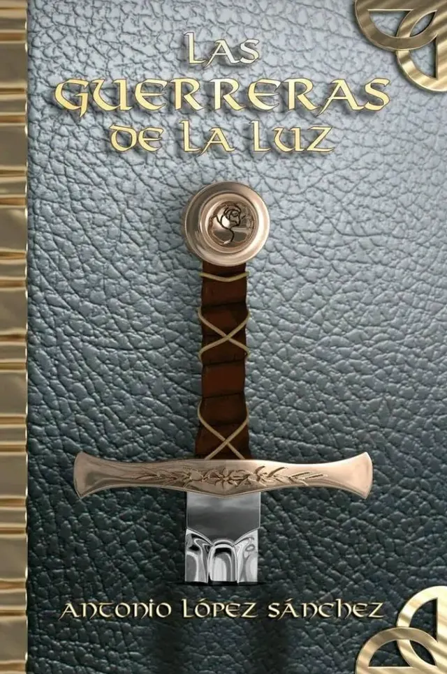

A. López Sánchez · Las novelashoja 2
I.
Las guerreras de la luz
Editorial de la Mujer, 2012
Premio La Rosa Blanca de la UNEAC
Una orden de mujeres guerreras se alza contra la oscuridad que avanza sobre su reino. La novela que abrió la saga fantástica del autor y le valió el premio de la UNEAC.
[sinopsis provisional del demo, pendiente del texto oficial]
